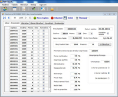
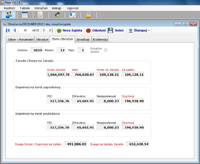
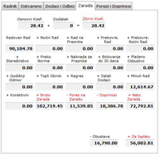
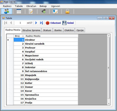
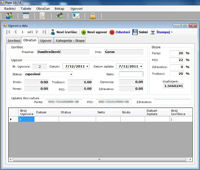
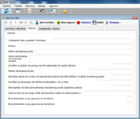

Plate - aktuelna verzija 2.0.7.4.
Program za obračun zarada
 - Omogućva podešavanje svih parametara za obračun zarade (neto cena rada, bruto cena rada, broj radnih sati, praznici, minimalna osnovica za obračun doprinosa, porezi, doprinosi, bolovanje, prekovremeni rad, noćni rad...)
- Prikaz i izmena svih podataka o obračunu za svakog radnika (ostvareno, dodaci i odbici, zarada, porezi i doprinosi).
- Prikaz zbirnog obračuna (zarada i porez na zaradu, doprinosi na teret zaposlenog, doprinosi na teret poslodavca, svega porezi i doprinosi za uplatu, svega za isplatu zarada).
- Štampanje izveštaja i prikaz tabele evidancija.
- Dodavanje, pregled i izmena podataka o radniku. Pored osnovnih podataka tu su i prethodni staž, datum zaposlenja, stručna sprema, radno mesto, status, banka, broj žiro računa.
- Pregled i izmena šifarnika. Tabele: radna mesta, stručne spreme, statusi, banke, olakšice, opcije.
- Pregled i izmena osnovnih podataka o firmi koja uvodi softver (osnovni podaci, uplatni računi).
- Arhiviranje baze podataka, backup.
- Ugovori o delu. Pregled, dodavanje i izmena izvršilaca. Definisanje novog obračuna i ugovora o delu. Definisanje kategorija i stopa. Štampanje ugovora.




Change log
Verzija 2.0.7.4
- Omogućeno isključenje obračuna plata uz "Plate.txt". Direktan ulaz u ugovore o delu.
Verzija 2.0.7.3
- Ispravljena greška kod automatskog izbora poreske korekcije.
- Ispravljena greška kod dodavanja radnika u prvoj isplati.
Verzija 2.0.7.2
- Ispravljena greška prikaza koja je isplata izabrana, kod odustajanja od dodavanja isplate.
- Urađeno inteligentnije označavanje da li je isplata konačna, kod dodavanja nove isplate
Verzija 2.0.7.1
- Ispravljena greška u prikazu ugovora o radu.
- Ispravljena greška u upisu broja sati kod niže norme.
- Ispravljena greška u prikazu obračuna cene rada kod odustajanja od izmena.
- Kod otvaranja nove isplate urađeno prebacivanje na izbor.
Verzija 2.0.7.0
- Dodata tabela Ugovorci.
- U tabeli Ugovori dodato polje BrRada tipa Integer.
- Postavljena relacija između tabele Ugovorci i Ugovori BrRada->BrRada.
- Dodato štampanje Blanko obrazaca: OPJ-6, M-UN i ugovora o delu.
- Dodato štampanje Ugovora o delu.
Verzija 2.0.6.9
- U tabeli Firma dodata kolona Registar tipa Text 15.
- U osnovnim podacima dodato polje registarski broj.
- Dorađen obrazac M-UN.
Verzija 2.0.6.8
- Urađeno štampanje Obrasca M-UN.
Verzija 2.0.6.7
- Urađeno štampanje specifikacije uz PP OPJ-6.
- Urađeno štampanje virmana za uplatu poreza i doprinosa.
Verzija 2.0.6.6
- Urađeno štampanje Obrasca PP OPJ-6.
Verzija 2.0.6.5
- Dodata tabela Opcije, preko koje se moze isključiti Starešinstvo, Olakšice i Bolovanje preko 30 dana.
- Urađena kalkulacija ugovora o delu.
Verzija 2.0.6.4
- Započeta izrada Ugovora o delu.
- Dodata nova tabela Ugovori.
- Dodata nova tabela UKategorije.
- Dodata nova tabela UStope.
Verzija 2.0.6.3
- Urađeno arhiviranje baze.
Verzija 2.0.6.2
- Ubačen SplashScreen.
- Urađen Obrazac PP OD-1.
Verzija 2.0.6.0
- U tabeli Privreme dodata kolona Bol30 tipa Double.
- Urađen pojedinačni obračun zarade za bolovanje preko 30 dana.
- Urađen pojedinačni obračun poreza i doprinosa za bolovanje preko 30 dana.
- Urađen zbirni obračun zarada, poreza i doprinosa za bolovanje preko 30 dana.
- Urađen Obrazac OPJ za bolovanje preko 30 dana.
- Urađena Specifikazija uz OPJ za bolovanje preko 30 dana.
Verzija 2.0.5.4
- Isključena optimistička konkurencija u Obracun_ds u svim tabelama.
- U tabeli Privreme kolona ID promenjena iz AutoNumber u Number.
- U tabeli Obracun kolona ID promenjena iz AutoNumber u Number.
Verzija 2.0.5.3
- Ispravljena greška u evidentiranju podataka u tabeli Obracun, kod isplate iz dva dela (kod prvog radnika).
- Ispravljena greška kod štampanja pojedinačne platne liste.
Verzija 2.0.5.2
- Urađena provera PIB-a u Osnovnim podacima.
- Urađena provera brojeva Žiro racuna u osnovnim podacima.
Verzija 2.0.5.1
- Urađena provera JMBG-a kod radnika.
Verzija 2.0.5.0
- Urađeno štampanje INSZ obrazca.
Verzija 2.0.4.9
- Urađeno štampanje INSZ-M i INSZ-I obrazaca.
Verzija 2.0.4.8
- Urađeno štampanje INSZ-P obrazca.
Verzija 2.0.4.7
- Urađeno štampanje virmana za prenos zarade radnicima.
- Ispravljenje greške kod štampanja virmana.
Verzija 2.0.4.6
- Završeno štampanje svih Obrazaca koji su bili u staroj VB6 verziji, osim INSZ.
- Ispravljene greške kod dodavanja novih radnika.
Verzija 2.0.4.2
- Završeno štampanje PPP Obrazaca.
Verzija 2.0.3.1
- Dorađeno neplaćeno odsustvo, rekapitulacija.
Verzija 2.0.3.0
- Dodata Login forma.
Verzija 2.0.2.9
- Odrađeno neplaćeno odsustvo, zdravstvo samo na teret poslodavca.
Verzija 2.0.0.0
- U tabeli Radnici, kolona BrRada postavljena za primarni ključ i promenjen je tip iz Double u Integer.
- U tabeli RadnaMesta, kolona Broj postavljena za primarni ključ.
- U tabeli Spreme, kolona Broj postavljena za primarni ključ.
- U tabeli Statusi, dodata kolona ID tipa Integer i postavljena za primarni ključ.
- U tabeli Olaksice, kolona Broj postavljena za primarni ključ.
- U tabeli Firma kolona PIB postavljena za primarni ključ.
- U tabeli Privreme dodata kolona ID tipa AutoNumber - Long Integer i postavljena za primarni ključ.
- U tabeli Obracun dodata kolona ID tipa AutoNumber - Long Integer i postavljena za primarni ključ.
- U tabeli Obracun koloni BrRada promenjen je tip, iz Double u Integer.